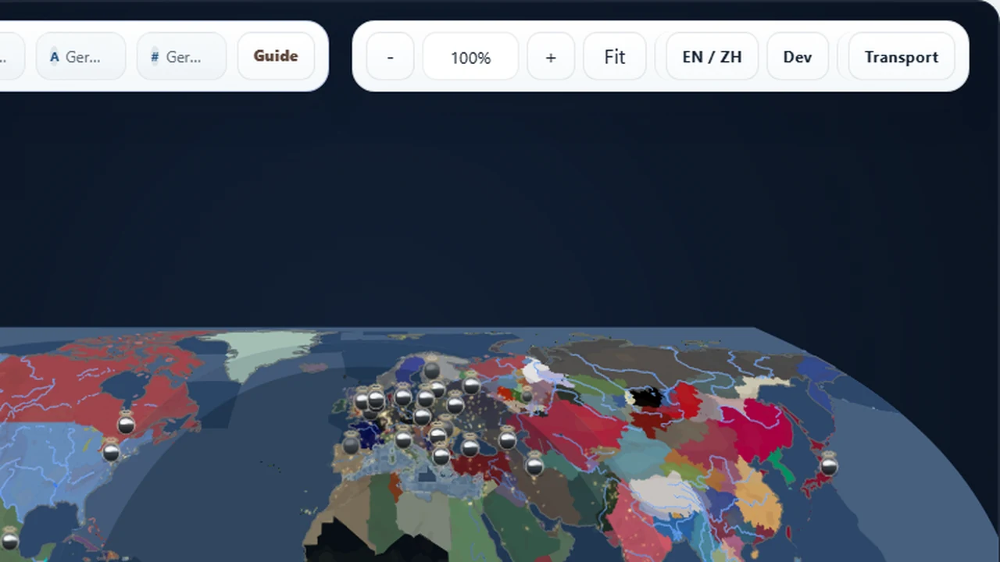
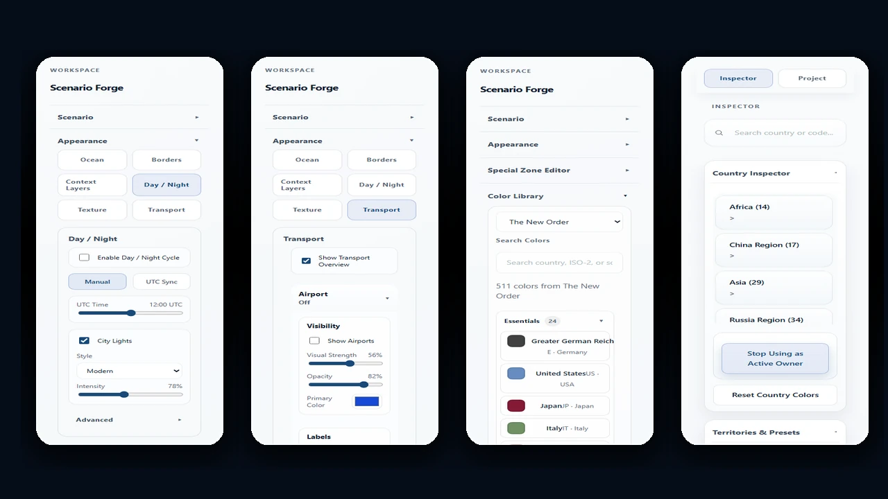

Scenario-first political map workbench
Forge political maps that feel alive.
Build from a world state, reshape ownership and control, layer context, and export a map that can actually carry a story.
Data sources
Built on recognizable map data families.
Every source claim below is tied to checked-in manifests, ledgers, or build audits.
Natural Earth
geoBoundaries
GeoNames
NOAA ETOPO
NASA Black Marble
OpenStreetMap
Geofabrik
MLIT Japan
Selected works
Show the result first.
Scenario Forge is easiest to understand when you see the maps it can produce, not when you read a wall of feature names.
Alternate history baseline
Start from a scenario, not a blank canvas.
Switch between named world states, keep political context intact, and begin from something that already carries narrative meaning.

Conflict and context
Overlay political change with real-world texture.
Blend ownership, labels, urban lights, and context layers to move from editor output toward presentation-ready storytelling.

Atlas-style output
Push toward a cleaner, calmer final map.
Dial back the noise, tune the layer stack, and export a map that reads like a finished visual, not just an internal workspace snapshot.
Live product preview
Use a real pilot dataset as the first thing people can touch.
The Japan transport pack is the strongest current sample: road and rail previews are checked in, counted, and tied back to source manifests.
Japan pilot preview
Road, rail, cities, terrain, and night-light context in one compact view.
4794 road preview features and 1105 rail preview features.
Use the checked-in Japan transport manifests as a compact proof that infrastructure layers can become a real product surface.
Show settlement anchors, labels, and density cues before opening the editor.
The landing page can preview how world city assets become readable map context instead of a plain feature list.
Terrain, bathymetry, rivers, and physical semantics give the map a real surface.
Relief, bathymetry, and river context make the preview read like geography before the full editor opens.
Night-light and political overlays help the same geography tell a different story.
Use this mode to explain presentation maps, campaign atlases, and dense storytelling exports.
Why Scenario Forge
Stop stitching five tools together to tell one geopolitical story.
Typical workflow
- One tool for painting political states.
- Another for labels or overlays.
- Another for exports or presentation cleanup.
- No real scenario baseline to start from.
Scenario Forge
- Begin from a named world state.
- Repaint ownership, controller, and frontline logic inside one workspace.
- Layer context and presentation surfaces without leaving the tool.
- Save the project or export the result when the story is ready.
Workflow
A short path from baseline to story-ready map.
Start from a world state
Use built-in baselines like Blank Map, Modern World, HOI4 1936, HOI4 1939, or TNO 1962 to begin from an explicit scenario frame.
Repaint control and ownership
Shift who owns what, who controls what, and how the map should read politically without rebuilding the whole surface from scratch.
Layer context and export
Add rivers, urban areas, city points, water regions, special zones, legends, and visual refinements, then export a clean PNG or JPG snapshot.
Product capabilities
Organized like a serious map product.
Each capability group is organized around a real creator workflow and the data contracts behind it.
Cartographic design
Layer order, color palettes, borders, labels, legends, city points, water regions, and export-ready map presentation.
- Mod palettes for HOI4, Kaiserreich, TNO, Red Flood, and Vanilla-style maps.
- Export workbench with 1x-4x presentation snapshots.
Scenario editing
Named world states, ownership, controller, frontlines, special regions, country metadata, and scenario-aware startup.
- 80-step undo and redo for map editing sessions.
- Administrative districts and hierarchy editing for deep scenario work.
Spatial data and analysis
Source ledgers, asset catalogs, health checks, provenance sidecars, hierarchy data, and reusable geography pipelines.
Transport and infrastructure
Road and rail previews are the current proof point; airports, ports, energy, industrial, and resource families are tracked as in-progress data packs.
- Japan roads, rail, airports, ports, energy, industry, logistics, and resource families.
- Source signatures and build audits keep infrastructure packs reproducible.
Imagery and context layers
Relief, bathymetry, contours, rivers, night lights, urban areas, and physical semantics for richer map reading.
Project management
Local save/load, bilingual UI, export workflows, future cloud save surfaces, and repeatable publishing contracts.
Built for
People who need the map to carry the scenario.
Scenario templates
Start from a real world state.
The first action can be choosing the political universe, not rebuilding a base map.
Blank Map
Modern World
HOI4 1936 / 1939
TNO 1962
Data foundation
A map product needs visible data trust.
Scenario Forge tracks source ledgers, asset catalogs, build audits, and provenance sidecars so map claims stay tied to real files.
Boundaries and populated places
Natural Earth, geoBoundaries, GeoNames, hierarchy data, and country policy assets provide the political and settlement backbone.
Relief, bathymetry, rivers, and semantics
NOAA ETOPO, bathymetry packs, contours, rivers, and physical semantics help maps read like geography instead of flat color blocks.
Transport packs with manifests
Japan road and rail previews are checked in with manifests. Additional infrastructure families stay visible as expansion work.
Cataloged, reproducible, and inspectable
The checked-in catalog, source ledger, provenance files, and strict contract tests keep source claims tied to files instead of marketing copy.
Editions and license direction
Explain how people can try it today and where the product can grow.
Live demo
Open the browser workbench, explore built-in scenarios, tune layers, and export presentation snapshots.
Project files and reproducible data
Keep scenario work local, inspect data assets, and use source manifests when a map needs a clear provenance trail.
Team and cloud surfaces
Future product packaging can extend the backend direction into cloud saves, shared project spaces, permissioned publishing, and larger data packs.
Sample use cases
Show the workflows a map product should own.
Campaign atlas
Build a TNO 1962 political briefing map.
Start from a named world state, adjust presentation layers, add city and water context, and export a map ready for a scenario brief.
Infrastructure review
Inspect Japan road and rail density.
Use preview packs to explain corridors, rail hubs, ports, and transport readiness before deeper editor work.
Presentation map pack
Turn one geography into multiple story views.
Move between political color, terrain, night-light, city, and infrastructure views to prepare a consistent visual set.
FAQ
Answer the questions a real map product page creates.
Is Scenario Forge a GIS tool or a map editor?
It is a scenario-first map workbench. It borrows GIS-style data discipline, then focuses the interface around political scenarios and presentation output.
What data sources does it use?
The current asset families include Natural Earth, geoBoundaries, GeoNames, NOAA ETOPO, NASA Black Marble style night-light assets, OpenStreetMap, Geofabrik, and country transport sources.
Can it work offline?
The checked-in demo assets run as a static web app. Larger source refresh and backend sharing workflows use local tooling or the local development backend.
What can I export?
The editor supports presentation snapshots such as PNG and JPG, with layer styling kept close to the map workspace.
How mature are the transport layers?
Japan road and rail previews are the clearest current sample. Other infrastructure families are visible as expansion work and should be read through the in-progress roadmap.
What is the license model?
The current public surface is a live demo and repository. Creator, team, and cloud packaging are product directions for a later release.
In progress
Transparent about what is ready and what is not.
Scenario Forge already has a strong core. Some transport-related surfaces are still intentionally presented as work in progress.
Transport workbench
The workbench already carries transport pack inspection, manifest review, and route-density preview into the product surface.
Japan road preview
Currently the most mature transport sample inside the project.
Rail and other infrastructure families
Rail, airport, port, energy, industrial, logistics, and resource packs are moving through the same manifest-led pipeline.
What’s new
A product surface that keeps moving.
Product-grade landing showcase
The homepage now exposes live preview, data trust, editions, use cases, and FAQ in the first product narrative.
Cloud save foundation
Local backend boundaries and shared project contracts are now visible as the foundation for future team surfaces.
Cataloged data foundation
The checked-in catalog tracks 488 assets across source ledgers, transport manifests, topology, palettes, and runtime data.
Ready to open the workbench?
Step into the editor when you want to move from idea to map.
The showcase explains the product. The editor is where you actually shape the scenario.